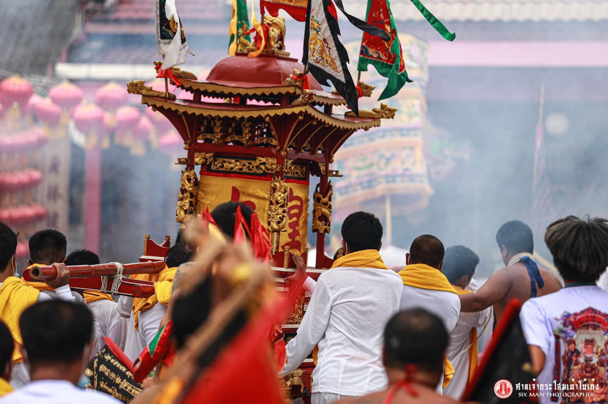
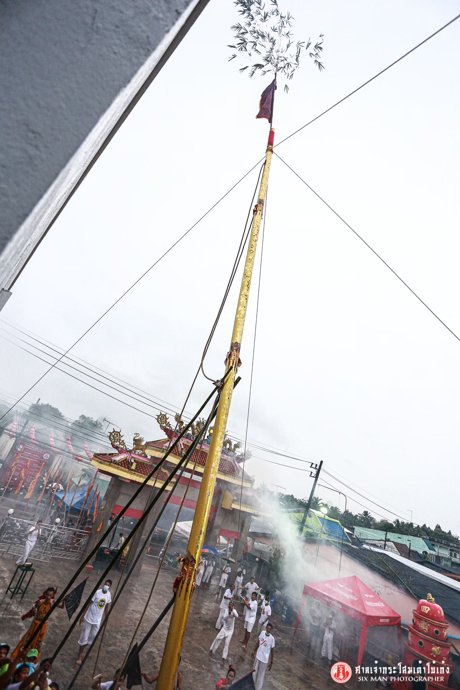

พิธีกรรมในช่วงเทศกาลกินเจ
 |
 |
 |
 |
พิธีกรรมต่างๆในช่วงเทศกาลกินเจ
การประกอบพิธีกรรมกินผัก ก่อนพิธี ๑ วัน จะมีการทำความสะอาดศาลเจ้า รมกำยานไม้หอม และมีการยกเสาธงไว้หน้าศาลเจ้า สำหรับอันเชิญดวงวิญญาณของเจ้า เที่ยงคืนก็ประกอบพิธีอัญเชิญยกอ๋องฮ่องเต้ (พระอิศวร) และกิ๋วอ๋องไตเต หรือกิวอ่องฮุดโจ้ว (ผู้เป็นใหญ่ทั้ง ๙) มาเป็นประธานในพิธี จากนั้นก็แขวนตะเกียงน้ำมัน ๙ ดวง อันเป็นสัญลักษณ์ของดวงวิญญาณกิ๋วอ๋องไตเต ไว้บนเสาธง อันเป็นการแสดงว่าพิธีกินผักเริ่มขึ้นแล้ว
การใช้ตะเกียงน้ำมัน ๙ ดวง ก็เพื่อให้หมายถึงดวงวิญญาณของกิ๋วอ๋องไตเต หรือ เก้าอ๊วงไตเต คำว่า "เก้าอ๊วงไตเต" หรือกิ๋วอ๋อง แปลว่า นพราชา ตามตำราโหราศาสตร์จีน ก็หมายถึงดาวนพเคราะห์ โดยเชื่อกันว่าดาวเคราะห์ ๙ ดวงนี้ เกิดจากการแบ่งภาคของเทพเจ้า ๙ องค์ ซึ่งทรงอำนาจมาก บริหารธาตุดิน ธาตุน้ำ ธาตุไฟ ธาตุลม ธาตุทอง เทพเจ้าทั้ง ๙ นี้ เกิดจากการแบ่งภาคของอดีตพระพุทธเจ้า ๗ องค์ กับพระมหาโพธิสัตว์อีก ๒ องค์ เทพเจ้าแห่งดาวนพเคราะห์นี้มีคุณแก่โลกมาก เพราะธาตุทั้งหลายที่พระองค์ประทานให้เป็นของจำเป็นในสรรพสังขาร์
หลังจากทำพิธีรับเจ้ามาเป็นประธานในศาลแล้วก็ทำพิธีวางกำลังทหารรักษาการตามทิศเรียกว่า พิธี "ปังเอี้ย" หรือ ปั้งกุ๊น" พิธีนี้จะใช้ธงสีต่าง ไปปักเป็นสัญลักษณ์การวางกำลังทหาร ถือเอาสมัยซ้องคือการวางกำลังทำทิศ
ในช่วงเวลาทำพิธี ๙ วัน จะมีพิธีย่อย ๆ หลายอย่างได้แก่
1. พิธีบูชาเจ้า ในวันแรกของพิธีจะมีการบูชาเจ้าด้วยเครื่องเซ่น และตามบ้านของผู้กินผัก เมื่อกินผักได้ครบ ๓ วัน จะถือว่าผู้นั้นสะอาดบริสุทธิ์ หรือที่เรียกว่า "เช้ง" ตอนนี้จะมีการทำพิธีเชิญเจ้า ๒ องค์ มาร่วมพิธี องค์แรกเป็นเจ้าซึ่งทำหน้าที่สำรวจผู้มาเกิดชื่อ "ล้ำเต้า" อีกองค์เป็นเจ้าซึ่งทำหน้าที่สำรวจผู้ตายไปชื่อ "ปักเต้า"
2. พิธีโขกุ้น หมายถึงการเลี้ยงทหาร ซึงทำพิธีในวัน ๓ ค่ำ ๖ ค่ำ และ ๙ ค่ำ หลังเที่ยงเมื่อเริ่มพิธีต้องมีการเตรียมอาหาร และเหล้าสำหรับเซ่นสังเวย เลี้ยงทหารและมีหญ้าหรือพวกถั่ว เพื่อเป็นอาหารของม้า หรือเมื่อเสร็จพิธีแล้วตอนกลางคืนจะเรียกตรวจพลทหารตามทิศเรียกว่า "เซี่ยมเมี้ย"
3. พิธีซ้องเก็ง เป็นการสวดมนต์โดยจะเริ่มทำการสวดมนต์ตั้งแต่เมื่อพระกิวอ๋องไตเต หนือกิวอ๋องฮุดโจ้วเข้ามาประทับในโรงพระ และจัดทำพิธีสวดวันละ ๒ ครั้ง ในตอนเช้าและตอนย่ำค่ำ เป็นลักษณะการสวดมนต์เช้า และสวดมนต์เย็น โดยเฉพาะกลางคืน หลังจากสวดมนต์ซึ่งใช้บทสวดคือ ปักเต้าเก็ง ก็จะมีการ "ตักซ้อ" คืออ่านรายชื่อของผู้ที่เข้าร่วมกินเจ ซึ่งอ่านต่อหน้าแท่นบูชา เป็นลักษณะการเบิกตัวเข้าเฝ้า
4. พิธีบูชาดาว จะทำในคืนวัน ๗ ค่ำ เพื่อขอให้ช่วยคุ้มครองผู้กินผัก
5. พระออกเที่ยว หรือการแห่เจ้า เป็นการออกเพื่อโปรดสัตว์ออกเยี่ยมประชาชนเคารพนับถือ โดยจะมีขบวนธงและป้ายชื่อแห่นำหน้า จากนั้นก็จะเป็นการเกี้ยวหามพระเรียกว่า "ถ้วยเปี๊ย" โดยจะหามรูปพระบูชาต่าง ๆ ออกนั่งเกี้ยวไป ซึ่งจะจัดตามชั้น และยศของพระ เช่น จากสิญูขึ้นไปก็เป็นง่วนโส่ย สูงไปอีกก็เป็นไต่เต้ สูงขึ้นไปเป็นฮุด จากนั้นจะเป็นขบวนเกี้ยวใหญ่ ซึ่งมักจะใช้คน ๘ คน และมีฉัตรจีนกั้นไปด้วย จะเป็นที่ประทับของกิวอ๋องฮุดโจ้ว ในขณะที่ขบวนแห่ผ่านไป ชาวบ้านจะตั้งโต๊ะบูชาหน้าบ้าน และจุดประทัดต้อนรับขบวนเมื่อผ่านไปถึง
6. การลุยไฟ กองไฟถือว่าเป็นกองไฟศักดิ์สิทธิ์ ในแง่ความศักดิ์สิทธิ์เป็นการแสดงถึงอิทธิฤทธิ์ที่บังคับไฟไม่ให้ร้อนหรืออาจจะถือว่าเป็นไฟทิพย์ ใช้ชำระความสกปรกของร่างกายให้บริสุทธิ์โดยลุยทั้งคนทรงเจ้าที่กำลังประทับทรง หรือประชาชนโดยทั่วไปก็ได้
7. พิธีส่งพระ ทำในวันสุดท้ายของการถือศีลกินผัก โดยตอนกลางวันจะมีการส่งเทวดา มักจะส่งกันที่หน้าเสาธง ส่วนตอนกลางคืนจะมีการส่งพระกิวอ๋องฮุดโจ้วกลับสวรรค์ โดยส่งกลับทางทะเล เมื่อขบวนส่งออกพ้นประตู ไฟทุกดวงในโรงพระต้องดับสนิทหมดแล้ว ตะเกียงที่เสาธงจะถูกดึงขึ้นสูงสุดตอนเช้าของวันแรก หลังจากเสร็จงานกินผักจะมีการลงเสาธง และเรียกกำลังทหารกลับ หลังจากที่เลี้ยงทหารเสร็จแล้ว จากนั้นก็เปิดประตูใหญ่ เมื่อได้ฤกษ์เปิดตามวันในปฏิทิน หรือตามที่เจ้าสั่งไว้
ที่มา prapayneethai